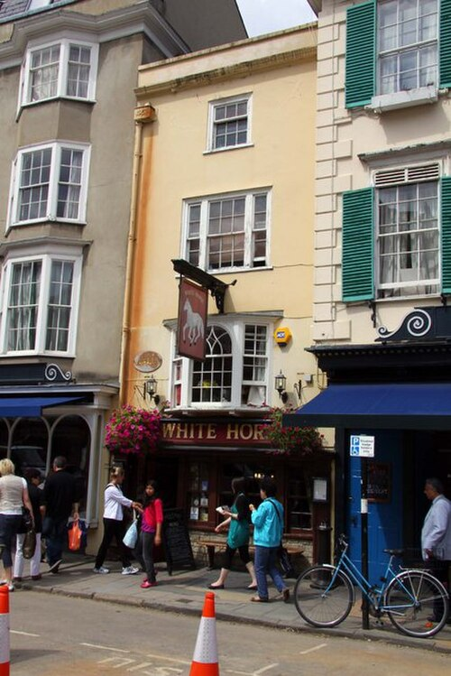
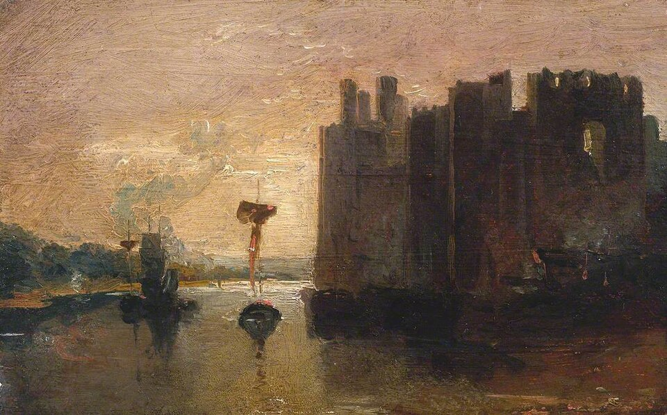

Роман · 1976
Последний раз её видели
Last Seen Wearing — второй роман об инспекторе Морсе. Русское название рабочее.
- Первое издание
- Macmillan, Лондон, апрель 1976
- Расследуют
- инспектор Морс и сержант Льюис по поручению главного суперинтенданта Стрейнджа
- Место
- Кидлингтон и Северный Оксфорд, с выездами в Лондон и в валлийский Карнарвон
- По-русски
- на LiveLib значится книга «Без вести пропавшая»; выходных данных там нет, издание мы пока не нашли
- Экранизация
- «Инспектор Морс», 8 марта 1988; режиссёр Эдвард Беннетт, сценарий Томаса Эллиса
- Радио
- BBC Radio 4, 1994: Морс — Джон Шрапнел, Льюис — Роберт Гленистер
Завязка
Валери Тейлор, школьница из общеобразовательной школы имени Роджера Бэкона в Кидлингтоне, ушла на обед домой и не вернулась. Последним её видел школьный регулировщик на переходе: девушка в форме, с сумкой. Прошло больше двух лет. Инспектор Эйнли, который вёл дело, погиб в дорожной аварии, и вскоре после этого родители Валери получили письмо с лондонским штемпелем: у меня всё в порядке.
Стрейндж передаёт дело Морсу. Тот с самого начала уверен, что Валери мертва, и весь роман строит на этой уверенности одну стройную теорию за другой. Декстер дразнит читателя той же игрой, что и в первой книге: Морс блестящ, убедителен и раз за разом ошибается, а Льюис раз за разом приносит факт, который рушит очередную конструкцию.
Развязка — открыть, если роман прочитан
Заместитель директора Реджинальд Бейнс найден заколотым у себя дома возле оксфордского вокзала. Он упражнялся в почерке Валери: письмо родителям, скорее всего, подделал он. Бейнс шантажировал директора Дональда Филлипсона, у которого три года назад, когда тот приезжал в Оксфорд на собеседование, была мимолётная связь с Валери.
Вскоре после исчезновения Валери легла в лондонскую клинику на аборт. Отцом, видимо, был учитель французского Дэвид Эйкам, он же помог заплатить. Шила Филлипсон, жена директора, подписывает признание в убийстве Бейнса, но Морс считает, что она прикрывает мужа. И Шила, и Эйкам в тот вечер по отдельности заходили к Бейнсу, нашли дверь незапертой и хозяина не видели.
Женщина, которая живёт с Эйкамом в Карнарвоне под видом его жены, и есть Валери Тейлор. Это она приехала из Уэльса в Оксфорд и убила Бейнса. Морс понимает это слишком поздно, и Валери снова исчезает.
Люди
| Имя | Кто это |
|---|---|
| Валери Тейлор | Пропавшая школьница. |
| Грейс Тейлор | Её мать, очень на неё похожа. |
| Джордж Тейлор | Отчим, работает на городской свалке. |
| Дональд Филлипсон | Директор школы. |
| Шила Филлипсон | Его жена. |
| Реджинальд Бейнс | Заместитель директора, сам рассчитывал стать директором. |
| Дэвид Эйкам | Учитель французского, вёл у Валери последний урок, потом уехал в Северный Уэльс. |
| Инспектор Эйнли | Первый следователь по делу, погиб в аварии. |
| Джонни Магуайр | Бывший одноклассник Валери, работает в лондонском стрип-клубе. |
| Ивонн Бейкер | Соседка Валери по палате в клинике. |
| Стрейндж | Начальник Морса, см. статью. |
Места
Действие сдвигается из Вудстока к Кидлингтону и Северному Оксфорду. Школа вымышлена, а пабы почти все можно найти.
| Место | Что там происходит | |
|---|---|---|
| Кидлингтон | есть | Посёлок к северу от Оксфорда. Здесь школа и дом Тейлоров. |
| Школа Роджера Бэкона | вымысел | Общеобразовательная школа, где учились Валери и преподавали Филлипсон, Бейнс и Эйкам. |
| Порт-Мидоу | есть | Огромный общинный луг у Темзы. Морс когда-то едва не купил дом с видом на него. |
| Вулверкот | есть | Деревня на северном краю Порт-Мидоу; улица Уитем-Клоуз в ней выдумана. |
| Банбери-роуд | есть | Здесь живут Филлипсоны. |
| Район вокзала | есть | Здесь дом Бейнса. |
| «Белая лошадь» | есть | Маленький паб на Брод-стрит рядом с книжным магазином Блэквелла. |
| Бар «Рэндольфа» | есть | Бар старой гостиницы напротив музея Эшмола. |
| «Джерико Армс» | вымысел | Такого паба нет; ближе всего к нему настоящая таверна «Джерико» на Вальтон-стрит. |
| Карнарвон | есть | Городок с замком в Северном Уэльсе, куда переехал Эйкам. |





_-_Caernarvon_Castle_-_N01867_-_National_Gallery.jpg){kind=link}
Морс в этом романе
Ему около сорока пяти, он не женат и одинок и временами думает об этом всерьёз. По-прежнему ездит на «Лянче», живёт в Северном Оксфорде, курит. Пиво предпочитает настоящее, без газа, а не шипучее кеговое, которое тогда варили почти все пивоварни. Поёт баритоном, говорит по-французски. В Лондоне идёт в Английскую национальную оперу на «Валькирию».
Стрейндж, поручая ему дело, жалуется, что Морс для хорошего полицейского слишком витает в облаках. Льюис здесь впервые раскрывается с неожиданной стороны: когда-то он был чемпионом по боксу в первом среднем весе.
Что лежит у Морса на тумбочке
- «Дорога в Ксанаду» Джона Ливингстона Лоуза — знаменитое исследование о том, из каких книг родились стихи Кольриджа.
- Избранные рассказы Киплинга.
- Жизнеописание Рихарда Вагнера.
- Избранная проза А. Э. Хаусмана.
Эпиграфы и цитаты
У глав этого романа есть эпиграфы, и почти все они литературные. Первый — из Геродота, рассказ о Фермопилах. Среди остальных есть немецкая пословица о том, что за деревьями не видно леса. В тексте мелькают латинское ex nihilo nihil fit («из ничего ничего не бывает»), седьмой круг Дантова ада и «Путешествие с ослом по Севеннам» Стивенсона на столе у Филлипсона.
Реалии
- Общеобразовательная школа (comprehensive school)
- Государственная школа без вступительного отбора. В 1960–70-е такие школы вытесняли прежнее деление на «грамматические» школы для способных и «современные» для остальных.
- Школьный регулировщик (lollipop man)
- Человек в светлом плаще, который переводит детей через дорогу у школы. Его круглый знак «Стоп» на шесте похож на леденец, отсюда прозвище.
- Заместитель директора (second master)
- Второй человек в школе после директора. Бейнс сам надеялся на место директора и проиграл Филлипсону.
- Настоящий эль и кеговое пиво
- В семидесятые британские пивоварни массово перешли на фильтрованное пиво в кегах с углекислотой. В 1971 году любители традиционного эля из бочки основали общество CAMRA, «Кампанию за настоящий эль». Морс на их стороне.
- Английская национальная опера (ENO)
- Лондонская труппа в театре «Колизей». Её принцип — петь всё по-английски, включая Вагнера.
- Аборт в Англии семидесятых
- Легален с 1968 года, когда вступил в силу закон 1967 года. Для школьницы из Кидлингтона лондонская клиника была способом скрыть беременность от всех.
- Карнарвон (Caernarfon)
- Город в Северном Уэльсе со средневековым замком, где принцев Уэльских возводят в сан. Для оксфордца — край света.
Книга и сериал
Серия вышла 8 марта 1988 года, вторая во втором сезоне (пятая по общему счёту). В ролях: Джон Тоу, Кевин Уотли, Джеймс Граут (Стрейндж), Питер Вудторп (Макс), Питер Макинери (Дональд Филлипсон), Фиона Моллисон (Шила Филлипсон), Сюзанна Бертиш (Шерил Бейнс), Глин Хьюстон и Фрэнсис Томелти (Джордж и Грейс Крейвен), Мелисса Симмондс (Валери). Школьниц сыграли в том числе Джулия Савала и Элизабет Хёрли.
- Валери носит фамилию Крейвен, её отец — богатый строитель, а пропала она не два года, а несколько месяцев назад.
- Бейнс стал женщиной: Шерил Бейнс.
- Общеобразовательная школа превратилась в частную школу для девочек.
- Эйкам живёт в Рединге, а не в Карнарвоне.
- Лонсдейл-колледж сыграл Брейзноуз, а встреча Морса с миссис Филлипсон снималась в верхнем зале библиотеки Крайст-Чёрч.
- Серия открывается Первым скрипичным концертом Моцарта; когда Морс едет к Крейвенам, звучит «Полёт валькирий».
Чем отличается финал — открыть
В фильме у Филлипсона роман не с Валери, а с её матерью, и Бейнс погибает от его руки. Валери в конце возвращается домой.